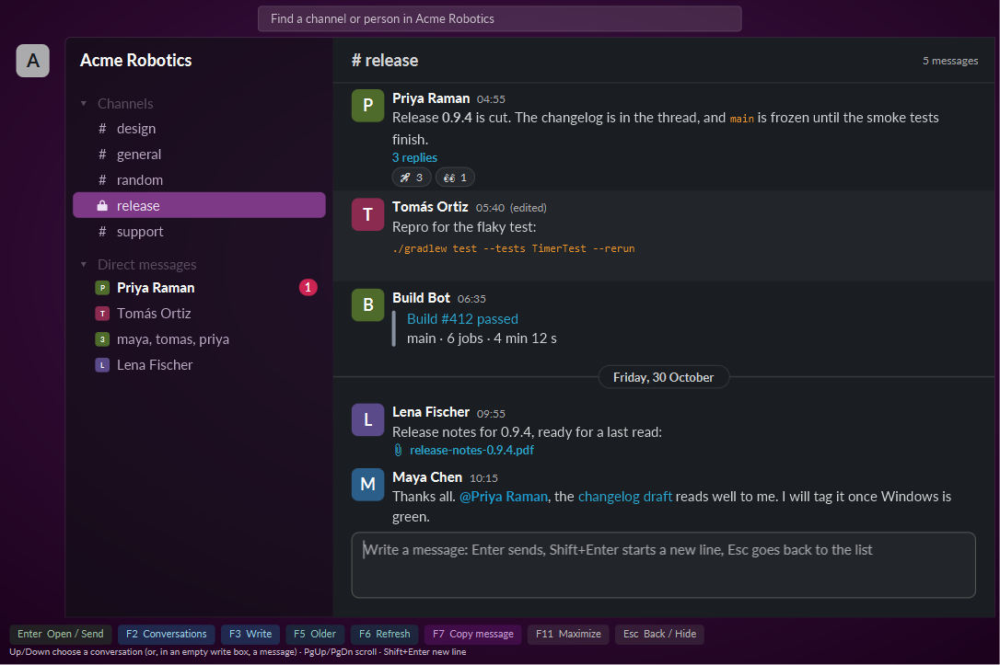

slackfxa small Slack client and command line, from fxslack
A Slack client for Windows that is one process instead of seven, with a command line in the same program that reads Slack for you and asks a person before it writes. Both act as you, through a Slack app you create in your own workspace.

slackfx --demo opens the same one without a Slack login.What it does
A client that stays small
slackfx lives in the tray. Open its window when you want to read or write, close it and the memory goes back. Measured in October 2026: about 200 MB with the window open, about 40 MB a couple of minutes after it was closed, where the official app held about a gigabyte.
Messages as they arrive
New messages show within a second through Slack's Socket Mode, with a notification for a direct message, a group chat or an @-mention. Channels, group chats and direct messages are in one list with a filter, and unread ones are marked.
A command line for scripts and agents
slackfx followed by a verb reads channels, threads and search results, and exports a whole channel with its files. It is made to be driven by AI coding agents, so the output is plain and every verb has --help.
Writes need a person
When slackfx is running, slackfx send, edit, delete and react go through it. A window shows exactly what is about to be posted and waits for F2. Reads are free.
Set it up
- At api.slack.com/apps create an app from a manifest, using the manifest in the repository. It asks for user-token scopes only.
- Install the app to your workspace and copy its User OAuth Token (
xoxp-). Generate an app-level token withconnections:write(xapp-) for live messages. - Save them in
%USERPROFILE%\fxslack\slackfx\app-config.json:{ "user_token": "xoxp-...", "app_token": "xapp-..." } - Run
slackfx auth --app, thenslackfx whoami, then startslackfxwith no arguments for the tray and the window.
Install
Download slackfx.exe from the latest release and run it. It needs Java 25 or later. The exe fetches its program file from the same release and checks it against a checksum built into it, and is both the client and the command line. The client checks for a newer release when it starts and every 24 hours, and asks before it updates; slackfx update does it from a terminal.